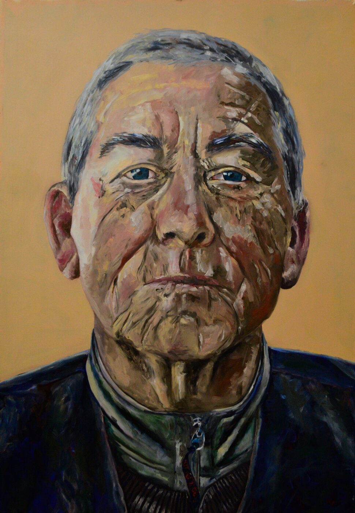

Artista visual · Pintura · Desenho · Fotografia
Monique
Maccari
Retratos de pessoas queridas, paisagens e cor. Pintura a óleo, pastel, nanquim e fotografia — de Caxias do Sul e Porto Alegre para a Austrália.
Ver obras
Obras
Sobre
Monique Maccari é artista visual nascida em Caxias do Sul (RS), com vasta produção em pintura, desenho e fotografia digital — a maior parte da coleção são retratos em tinta a óleo. Pinta desde os nove anos de idade.
Bacharela em Artes Visuais pelo Instituto de Artes da Universidade Federal do Rio Grande do Sul (UFRGS). De 2016 a 2022 integrou o Studio P — Atelier aberto de pintura, pesquisa e extensão, projeto de extensão do Instituto de Artes coordenado por Marilice Villeroy Corona: um ateliê aberto a participantes de fora da universidade, que pensa a pintura contemporânea em sua multiplicidade — da representação hiper-realista à pintura-instalação, da figuração à abstração. Com o grupo, participou de exposições, pinturas coletivas e intervenções urbanas.
Sua pesquisa se concentra no retrato e na paisagem. Trabalha a partir de fotografias de pessoas com quem tem vínculo, construindo a representação pela pincelada: a interferência faz parte do processo e revela a personalidade nos detalhes — a memória física construída pelas memórias emocionais e culturais.
Hoje vive na Austrália, onde segue pintando e passou a se dedicar também à cerâmica, como membro da Gold Coast Potters Association.
“Eu tenho uma forte relação com retratos. Em cada pintura ou desenho eu busquei capturar a essência dessas pessoas.”
— Monique Maccari, Pioneiro, 2019
Currículo
Exposição individual
- 20193×4 — Reffúgio Art Café, Caxias do Sul (18/04 – 20/05/2019). Produção e curadoria de Carolina Guimarães; realização Núcleo de Arte Unificada (NAU), Reffúgio Art Café e Associação Cultural Paralela. Séries Retratos, Algodão e Guitarrísticos. Ver cartaz
Exposições coletivas
- 2022Bacharelado 2020 — Pinacoteca do Instituto de Artes, UFRGS, Porto Alegre (22/03/2022). Exposição de formatura do TCC “Um sítio para a pintura: a natureza como meio para aproximações”.
- 2019–20CUBIC 4 — Circuito Universitário da Bienal de Curitiba — Museu da Gravura (Solar do Barão), Curitiba (24/09/2019 – 01/03/2020). Com o Studio P, pintura coletiva Panorâmica II — Jardim Botânico.
- 2019Fábbrica
- 2019Pinturas panorâmicas — Sala Fahrion, UFRGS, Porto Alegre. Studio P (Panorâmica II, 80 telas de 30 × 30 cm).
- 2018Quanto mais eu pinto, mais eu vejo. Quanto mais eu vejo, mais cor aparece — Sala Fahrion, UFRGS, Porto Alegre. Curadoria de Thiana Sehn; Studio P.
- 2018No eStúdio — Studio P na UFPR, Curitiba
- 2017No eStúdio — MARGS, Porto Alegre
- 2017Conversas: Desenho e pintura em pauta — com o Studio P, Pinacoteca da Feevale, RS
- 2015No tempo dos alquimistas — primeiras receitas da fotografia analógica, MARGS, Porto Alegre
Curadoria e organização
- 2018Dias de Vênus — exposição coletiva, Casa Baka, Porto Alegre
- 2018Quanto mais eu pinto, mais eu vejo… — co-organização da exposição coletiva do Studio P
Intervenções artísticas (Studio P)
- 2020Painel TUA UFRGS — pintura coletiva em acrílica sobre parede na Reitoria da UFRGS, Porto Alegre, inaugurada em 12/03/2020; projeto de Artur Veloso, execução do Studio P
- 2019Grafite de Giz — mural de giz no Centro Cultural da UFRGS, a convite de Laura Castilhos (01/08 – 23/09/2019)
- 2019Cubo Mágico — Incubadora Multissetorial Germina
- 2019Sem título — Projeto Espaço do Aluno
- 2018Panorâmica II — 80 telas, Jardim Botânico
- 2016Arte no Muro da Mauá — Projeto Santander, intervenção urbana, Porto Alegre
- 2016Escada de cor — intervenção urbana
- 2016Gabinete a Céu Aberto — intervenção urbana
Publicações
- 2018Studio P: atelier aberto de pintura — catálogo 2016–2018 — UFRGS, Porto Alegre. Fotografias (coautoria com o Studio P).
Formação e pesquisa
- 2024–25Aulas de cerâmica com Jo Mackenzie (Amare Ceramics) — Gold Coast Potters Association, Austrália, como membro da associação (abr. 2024 – jun. 2025)
- 2014–20Bacharelado em Artes Visuais — Instituto de Artes, UFRGS. TCC 2020/1: “Um sítio para a pintura: a natureza como meio para aproximações”, apresentado em 25/11/2020 (conceito A). Orientação: Marilice Villeroy Corona.
- 2016–22Studio P — Atelier aberto de pintura, pesquisa e extensão (Instituto de Artes, UFRGS), coordenação de Marilice Villeroy Corona. Projeto de extensão com 18 estudantes de graduação e 2 de mestrado; participação certificada em 06/08/2020.
- 2015–16Bolsista de Iniciação Científica BIC — UFRGS — “A representação na pintura contemporânea: procedimentos metapicturais e outras estratégias — a atualização do retrato”, pesquisa teórico-prática em pintura, apresentada no Salão UFRGS 2016. Ver pôster
Workshops, seminários e encontros
- jan. 2025 — Kiln Workshop com Porsche Owen — Gold Coast Potters Association, Austrália
- 2017 — Conversa de eStúdio
- 2017 — II Seminário de Pintura: Algumas questões para a pintura hoje
- 2015 — Arte Laguna
- 2015 — Criação, pertinência estética e comercialização de publicações de artistas
- 2015 — Desenho: Expor e Publicar (A Exposição e o Livro O Visionário)
- 2015 — Novas soluções em impressão digital
- 2014 — A Fotografia e suas reverberações com a Pintura, a Gravura e o Desenho
Imprensa e links
Contato
Encomendas de retratos, exposições, colaborações ou só uma conversa sobre pintura — escreva.